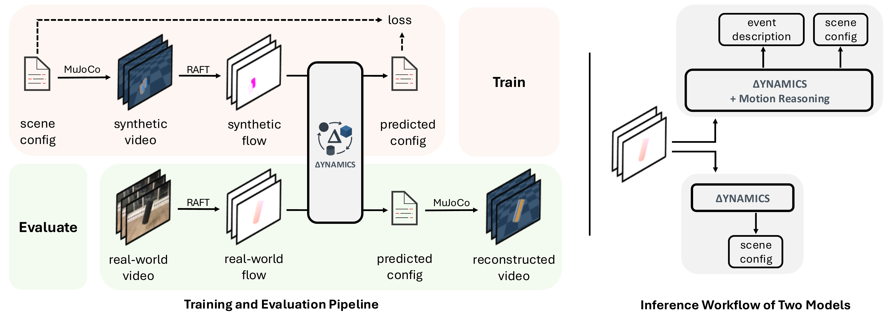
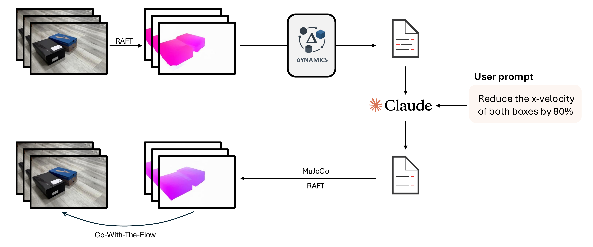
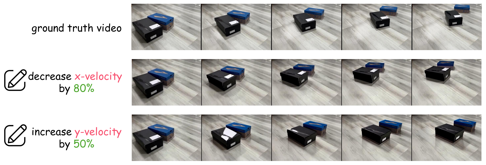

Inferring rigid-body physical states and properties from monocular videos is a fundamental step toward physics-based perception and simulation. Existing approaches assume specific underlying physical systems, object types, and camera poses, which are unable to generalize to complex real-world settings. We introduce ∆YNAMICS, a vision-language framework that uses language as a unified representation of rigid-body dynamics. Instead of directly predicting parameters, ∆YNAMICS generates scene configurations in a structured text format for physics simulation. We enhance the model's generalization by integrating natural language motion reasoning and leveraging optical flow as a semantic-agnostic input. On the CLEVRER dataset, ∆YNAMICS achieves a segmentation IoU of 0.30, a 7× improvement over leading VLMs (InternVL3-8B, Qwen2.5-VL-7B and Claude-4-Sonnet). Further, test-time sampling and evolutionary search further boost performance by 27% and 120% in segmentation IoU, respectively. Finally, we demonstrate strong transfer to a new dataset of 235 real-world rigid-body videos, highlighting the potential of language-driven physics inference for bridging perception and simulation.

Figure 2: Pipeline Overview. Our method takes video frames as input and produces a structured YAML configuration describing the physical properties and dynamics of objects in the scene.
Our language-based representation enables intuitive physics editing by modifying the YAML configuration.

Figure 11: Physics Editing Pipeline. Users can edit physical properties (mass, friction, restitution) or initial conditions (velocity, position) in the YAML configuration, and our system re-simulates the scene to generate physically plausible edited videos.

Figure 12: Editing Examples. By modifying parameters in our structured representation, users can create counterfactual simulations such as changing object trajectories, collision outcomes, or physical material properties.
@inproceedings{kao2026dynamics,
author = {Kao, Chia-Hsiang and Huynh, Cong Phuoc and Wang, Chien-Yi and
Vesdapunt, Noranart and Stojanov, Stefan and Hariharan, Bharath and
Obiednikov, Oleksandr and Zhou, Ning},
title = {∆YNAMICS: Language-Based Representation for Inferring
Rigid-Body Dynamics From Videos},
booktitle = {Proceedings of the IEEE/CVF Conference on Computer
Vision and Pattern Recognition (CVPR)},
year = {2026},
}